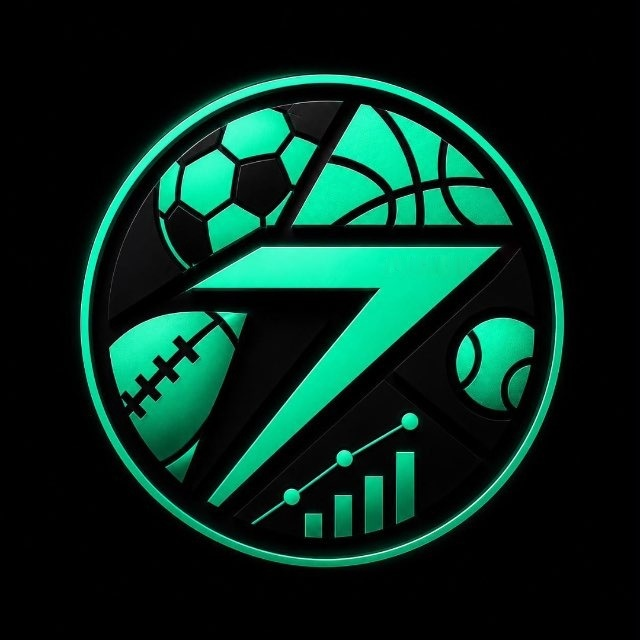

SEVENFootball · NBA · Tennis
Every morning we break down the matches worth watching: form, stats and the key detail most people miss.
Join free on TelegramFree channel · Takes 5 seconds
Illustrative example. Real breakdowns are posted daily in the channel.
One tap opens Telegram. No sign-up forms.
The key games of the day with form, stats and context.
Follow the games knowing what to look for.